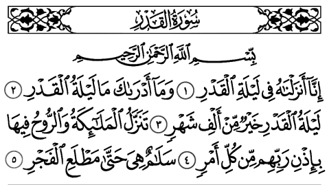

1 - En Arabe

2 - Traduction rapprochée
1. Nous l'avons certes, fait descendre (le Coran) pendant la nuit d'Al-Qadr.
2. Et qui te dira ce qu'est la nuit d'Al-Qadr?
3. La nuit d'Al-Qadr est meilleure que mille mois.
4. Durant celle-ci descendent les Anges ainsi que l'Esprit , par permission de leur Seigneur pour tout ordre.
5. Elle est paix et salut jusqu'à l'apparition de l'aube.